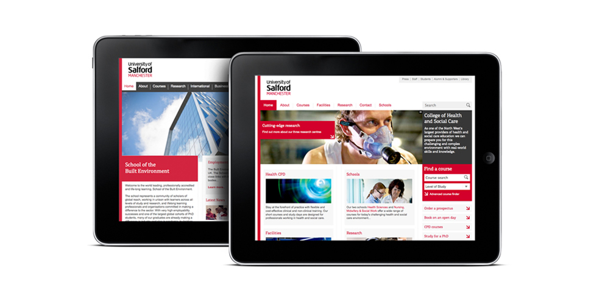

<div id="single-portfolio">
  <div id="portfolio-details" class="container"> <a class="close-folio-item" href="#"><i class="fa fa-times"></i></a> 
    <div class="row">
      <div class="col-sm-9">
        <div class="project-info">
          <h3>University of Salford</h3>
          <p>During the second phase of the <a href="http://www.salford.ac.uk/" target="_blank">University of Salford</a> corporate rebrand, I was asked to redesign all school and college websites to align with the new identity.</p>
          <p>I developed a framework for all ten school and three college sites based on the corporate template, and modified the design to create a distinctive subsection. The process involved working closely with the University's corporate brand and digital leads, and building relationships with the heads of each school and college to understand specific requirements and objectives.</p>
          <p><a href="http://www.salford.ac.uk/university/university-structure/schools-and-colleges" target="_blank">Browse school and college websites »</a></p>
        </div>
      </div>
      <div class="col-sm-3">
        <div class="project-details">
          <h3>Project Details</h3>
          <p><span>Client: </span>The University of Salford</p>
          <p><span>Date: February</span> 2012</p>
          <p><span>Tag:</span> user research, wireframes, IA</p>
        </div>
      </div>
    </div>
  </div>
</div>
